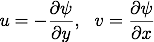

Lagrangian coherent structures (LCS) have recently become a popular technique for investigating flow structures and transport in complex fluid flows (see my Gallery for several examples). LCS act as barriers to transport and therefore help to visualize and quantify transport, often providing insight that Eulerian techniques (such as plotting vorticity contours) cannot. Most commonly, LCS are defined as ridges in the finite time Lyapunov exponent (FTLE) field. The FTLE measures stretching in the flow and, intuitively, it is expected that there will be large stretching at the boundaries of coherent structures or distinct regions of the flow as particles in these distinct regions diverge over time.
The FTLE is computed by analyzing the flow map from an initial time t0 to a final time t0+T for a given velocity field where T is called the "integration time". T may be positive or negative to reveal the forward or backward LCS which can also be thought of as repelling and attracting structures respectively. Once the flow map Φ is known, the gradient of the flow map is computed and the FTLE values σ are computed based on the largest eigenvalue of the deformation tensor Δ.
In layman's terms, this essentially amounts to placing many passive particles in the flow, tracking them for a certain amount of time T, and then determining the amount of stretching between nearby particles.
This page uses a javascript function to compute the finite time Lyapunov exponent (FTLE) fields for the time-dependent double gyre velocity field. The HTML5 canvas element is used to provide an interactive visualization of the particle advection and resulting FTLE fields. The velocity field for the double gyre is defined by the stream function:

The time-dependent double gyre consists of two counter-rotating gyres with a sinusoidal perturbation that enables fluid exchange between the gyres. FTLE computations reveal very clear ridges in the FTLE field of this flow. These ridges act as barriers to transport, outlining the regions in the flow that are transported between the two gyres.
This is an interactive page intended to demonstrate the effect of changing different parameters of the flow field and of the FTLE computation. As the computation runs, the particle positions are shown in the main window and the FTLE fields are eventually plotted in blue (forward FTLE) and red (backward FTLE). The FTLE results for each computation (along with the parameters used) will be displayed below the active computation window so you can scroll down to compare all your results. Reload this page to reset all parameters and clear the past results.
Interactive FTLE demonstration
Enter the desired parameters below and click "Compute FTLE" to run the computation.
Results: results will be displayed below.